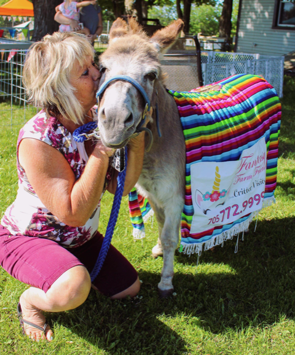
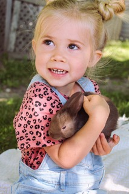
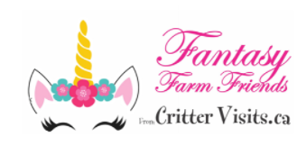
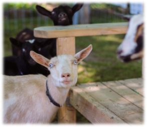
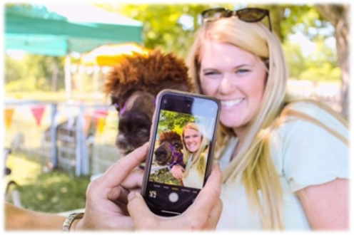
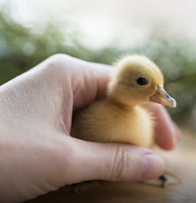
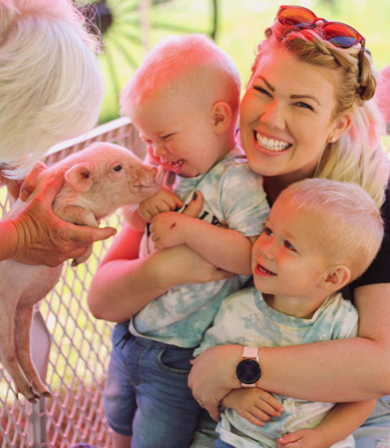
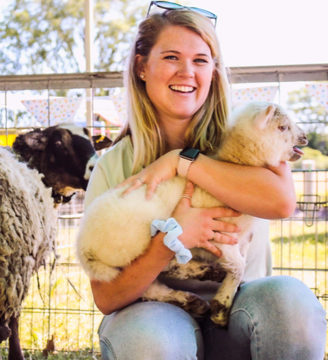
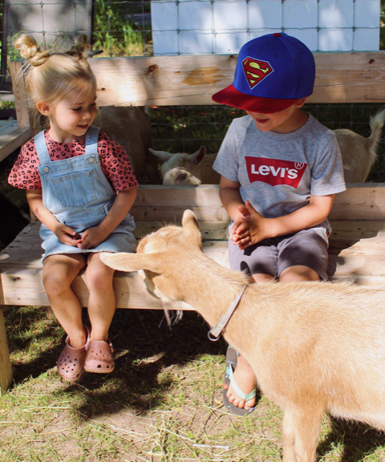
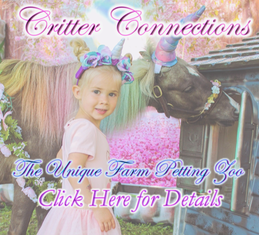

All about
Critter Connections
Critter Connections


Critter Connections Unique Farm Petting Zoo
 We’ve opened our farm to you this summer! Spend time under the shade of our maple trees. Our miniature farm critters are set up in a series of pens, allowing guests time to visit with their favourite breeds. Meet Barney Bunny, lovely lambs, Mama and baby donkey plus chicks and ducklings, crazy-feathered chickens, pot belly piglets, ducks with pom poms on top and our selfie-loving alpacas. Participants in our Foster or Hatching programs are eligible for a thank-you discount with Critter Connections. Text Farmer Karen!
Our Unicorn
Our Unicorn is ready to pose with your princess or knight. They’ll show off their colours with Frills + Fandom. (Jays, Habs, Leafs, Raptors and more may be seen). Meet critters dressed as Movie + TV characters. Friends from tropical places, Frozen adventures & Princesses to Pirates.
PRICES: One-Hour escorted tour for your group 
Monday to Thursday: $65 per booking
Holidays, Fridays and Weekends: $85 per booking
Your group of up to 10 people (in up to 2 vehicles) can book a time, any day of the week. We won’t add people to your group. It’s your bubble travelling with our Critter Buddy for the hour.

CLOSED-TOE shoes or boots must be worn by all guests entering our Critter Connections Zone. Covid Protocols include the necessity for MASKS to be worn by all guests. This is a non-refundable program. Come Rain or Shine, dressed for the weather.
Summer Mid-Week Duckling Foster Package
 Pick-up your ducklings after you visit our Critter Connections Zoo. Foster baby duckies for a week or three and return them back to the farm to join their cousins. Duc Kits include bedding, food, comprehensive manual, food and water dishes plus vitamin supplement. Review the details under the FOSTER link. A Discount is automatically applied when booking your package deal with two or more ducklings. These are Super Summer Friends. Watch them grow, swim and follow your kiddos around. Highly Recommended by parents!   
© Critter Visits of Woolley Wonderland Farm Inc. 2020